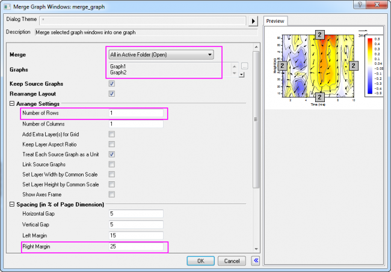

Konturdiagramm mit überlagertem Vektordiagramm
Contour-Overlay-Vector
Zusammenfassung
Dieses Tutorial zeigt Ihnen, wie Sie ein Konturdiagramm mit überlagertem
Vektordiagramm erstellen.
Was Sie lernen
werden
Dieses Tutorial zeigt Ihnen, wie Sie:
- ein Konturdiagramm und seine Farbskala erstellen und anpassen,
- ein XYWG-Vektordiagramm erstellen,
- zwei Diagramme zusammenfügen.
Schritte
Dieses Tutorial basiert auf dem Projekt: <Origin-Verzeichnis>\Samples\Tutorial
Data.opj.
Sie können dieses Diagramm auch im Lernzentrum finden. (Wählen Sie Hilfe:
Lernzentrum im Menü oder drücken Sie die Taste F11. Öffnen
Sie dann Diagrammbeispiel: Contour.)
Konturdiagramm
erstellen
- Öffnen Sie Tutorial Data.opj und navigieren Sie zum Ordner
Contour Plot with Vector Overlay im Projekt Explorer (PE).
- Aktivieren Sie die Matrix W147 und wählen Sie Zeichnen:
Kontur: Kontur - Farbabbildung im Menü. Das folgende Diagramm wird
erstellt:
-
Klicken Sie auf die Zeichnung und dann in der Popup-Minisymbolleiste
auf die Schaltfläche Ebenen festlegen, um den Dialog Ebenen
festlegen zu öffnen. Legen Sie dann folgende Ebenen fest:
-
Klicken Sie auf OK. Klicken Sie erneut auf die Zeichnung. Klicken
Sie in der Minisymbolleiste auf die Schaltfläche Palette, um Temperature
aus der Liste auszuwählen.
-
Klicken Sie erneut auf die Zeichnung. Klicken Sie in der Minisymbolleiste
auf die Schaltfläche Konturstil, um Farbskala ohne Konturlinien
aus der Liste auszuwählen.
- Lassen Sie uns Vorbereitungen für den dritten Abschnitt Zwei
Diagramme zusammenfügen treffen. Klicken Sie zuerst auf die X-Achse
und dann in der Minisymbolleiste auf die Schaltfläche Hilfsstrichsbeschriftung
zeigen, um die Beschriftungen zu verbergen. Klicken Sie dann bei erweiterter
Minisymbolleiste auf Stil der Hilfsstriche, um Kein aus
der Liste auszuwählen.
Löschen Sie die X- und Y-Achsentitel.
-
Um die Farbskala zu ändern, klicken Sie doppelt auf das Skalenobjekt,
um den Dialog Steuerung der Farbskala zu öffnen. Nehmen Sie folgende
Einstellungen vor:
-
Im Zweig Beschriftungen:
- Deaktivieren Sie das Kontrollkästchen Auto im ZWeig
Anzeige und setzen Sie Benutzerdefiniertes Format auf *1.
- Setzen Sie die Schriftgröße auf 22.
-
Auf der Seite Layout:
- Wählen Sie Schwarze Linie in der Auswahlliste Hintergrund.
- Setzen Sie die Breite der Farbbalken auf 100.
- Geben Sie auf der Seite Titel w(ms\+(-1)) im
Feld Titel ein und setzen Sie die Schriftgröße auf 26.
- Deaktivieren Sie auf der Seite Linie und Hilfsstriche
die Kontrollkästchen Linie und Hilfsstriche rechts zeigen und Rand
zeigen.
- Klicken Sie dann auf OK und positionieren Sie die Farbskala
auf der gewünschten Stelle (rechts vom Diagramm), indem Sie sie mit Ihrer
Maus ziehen.
- Das Konturdiagramm sollte jetzt, wie unten zu sehen, aussehen:
XYWG-Vektordiagramm
erstellen
- Aktivieren Sie das Arbeitsblatt WOR81147, markieren Sie
die letzten drei Spalten und wählen Sie Zeichnen: Spezialisiert: Vektor
XYWG im Menü.
- Klicken Sie doppelt auf einen Vektor, um den Dialog Details
Zeichnung auf der Registerkarte Vektor aufzurufen. Verwenden
Sie die untenstehenden Einstellungen:
Klicken Sie dann auf OK.
-
Um die Achsenskalierungen zu aktualisieren, wählen Sie Format: Achsen:
X-Achse. Der Dialog wird geöffnet. Nehmen Sie folgende Einstellungen
vor:
- Setzen Sie auf der Registerkarte Skalierung X von
= 1, bis = 10 und den Wert des Inkrements = 2.
- Wählen Sie auf der Registerkarte Skalierung das Symbol
Vertikal im linken Bedienfeld des Dialogs Achsen. Legen
Sie die Skalierung von Y mit von = 5, bis = 95 und den Wert
des Inkrements = 10 fest.
- Gehen Sie zur Registerkarte Linie und Hilfsstriche im
Dialog Achsen. Drücken Sie die Strg-Taste, um die Symbole
Oben und Rechts im linken Bedienfeld auszuwählen. Aktivieren
Sie dann das Kontrollkästchen Linie und Hilfsstriche zeigen und
setzen Sie den Stil der Großen Hilfsstriche und Kleinen
Hilfsstriche auf Innen. Auf diese Weise werden die obere X-
und die rechte Y-Achse mit Linien und Hilfsstrichen angezeigt.
- Klicken Sie auf OK.
- Zu diesem Zeitpunkt bemerken Sie vielleicht, dass die Vektoren
über die Grenzen der Achsen (Layerrahmen) hinausragen. Um sicherzustellen,
dass sie innerhalb des Layerrahmens angezeigt werden, wählen Sie Format:
Layer und aktivieren Sie auf der Registerkarte Anzeige und Performance
das Kontrollkästchen Nur innerhalb des Rahmens. Klicken Sie auf
OK.
- Klicken Sie mit der rechten Maustaste auf die Legende des Vektordiagramms
und wählen Sie Einstellungen im Kontextmenü, um die Objekteigenschaften
aufzurufen. Legen Sie die Optionen im Dialog, wie unten gezeigt, fest:
Zwei Diagramme
zusammenfügen
Das Kontur- und das Vektordiagramm wurden durch die obenstehenden Schritte
erstellt und sind jetzt bereit, zusammengefügt zu werden.
- Minimieren oder verbergen
Sie alle anderen Diagramme außer dem oben erstellten Kontur- und Vektordiagramm.
Wählen Sie, während eines der beiden Diagramme aktiviert ist, Grafik:
Grafikfenster zusammenfügen... im Menü.
-
Legen Sie im Dialog merge_graph die Einstellungen folgendermaßen
fest:
- Erweitern Sie den Zweig Einstellungen Anordnung und
setzen Sie die Anzahl der Zeilen auf 1.
- Erweitern Sie den Knoten Abstände (in % der Seitenabmessungen)
und geben Sie einen Wert von ungefähr "25" im Textfeld Rechter
Rand, um die Farbskalenlegende aus dem Konturdiagramm zu zeigen. Klicken
Sie auf OK.

-
Um die Schriftart für alle Objekte auf Verdana zu setzen:
- Passen Sie die Objekte einzeln an, indem Sie auf das Objekt
klicken und Verdana mit Hilfe der Schaltfläche Schriftart
 auf der Symbolleiste Format auswählen.
auf der Symbolleiste Format auswählen.
oder
- Verwenden Sie das Hilfsmittel Designs
verwalten, um ein Schriftdesign für das aktuelle Diagramm zu erstellen
und dann anzuwenden.
- Das Ergebnisdiagramm sollte folgendermaßen aussehen: